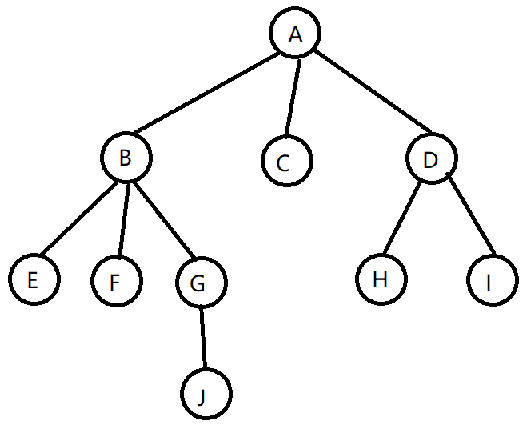

5.1 什么是树？
树是 n 个结点的有限集，n非负。当 n = 0 时，称为空树。任意非空树有以下特点：
- 有且仅有一个特定的称为根的结点。
- n > 1 时，其余结点可分为 m(m > 0)个互不相交的有限集T1，T2，......，Tm。其中每个集合本身又是一颗树，称为根的子树。
- 树的根结点没有前驱，除根结点外的所有结点有且只有一个前驱。
- 树中所有结点可以有零个或多个后继。

如上图所示：
A 为 E、F、G、H、I、J 的祖先。E、F、G、H、I、J 是 A 的子孙。
A 是 B、C、D 的双亲，B、C、D 是 A 的孩子。
B、C、D是兄弟，H、I也是兄弟。
树中一个结点的孩子个数称为该结点的度。树中结点的最大度数称为树的度。A的度为3，C的度为0，D的度为2。
度大于0的结点称为分支结点。度为0的结点称为叶子结点。
结点的层次从树根开始定义，根结点第1层，它的子结点第2层，以此类推。上图的树为4层。双亲在同一层的结点称为堂兄弟。E、F、G、H、I 是堂兄弟。
结点的深度：从根结点往下数，每下一层就+1。
结点的高度：从当前结点网上数，没上去一层+1。
数的高度就是有几层。图中为4。
有序树：树结点的各子树从左到右有次序，不能互换，
路径：树的路径指祖先到孙子（双亲到孩子）的路径，堂兄弟或者远亲的路径不算。
路径长度：就是路径所含的边数。
森林：n 颗互不相交的树。